Documentation
Info seputar Realme Narzo 30a
- Version: 1.0
- Cara Install Rom:
Cara Flash ROM
1. Reboot recovery (custom recovery)
2. Flash rom (.zip)
3. Flash Gapps (jika rom vanilla)
4. Format data (ketik yes)
5. Reboot system
Komodo OS v4.2
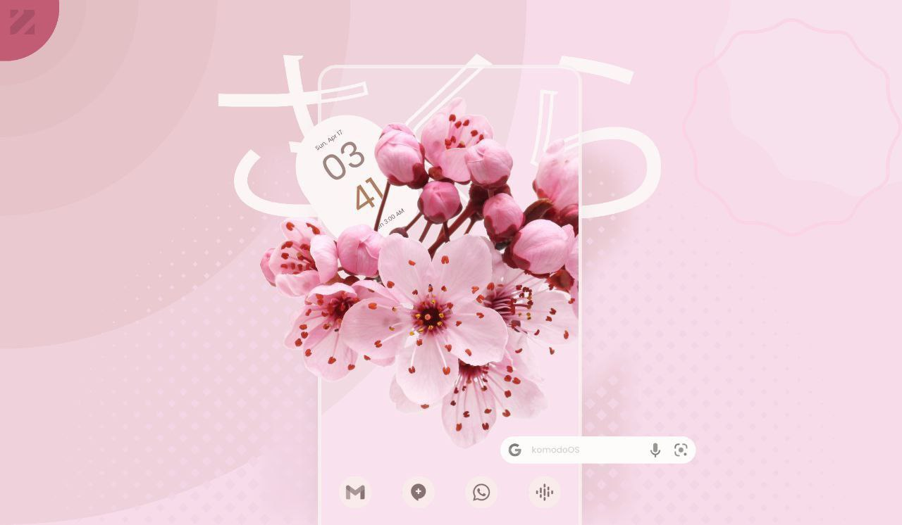Komodo OS v4.2 - Sakura
By @Yukiinawa
⬇️ Download: Here
🗓 Build Date: 27.04.2022
🆑 Changelog: Source
📝 Notes:
• Only for Realme UI 2.0 Vendor!!!
• If any bug faced send logs else it wont be considered as bug
🐞 Bugs:
• Screen recorder
• Brightness Slider
👤 Credits:
• Anoos and sarthak for trees
• Don-eun for kernel
Kaleidoscope SunFlowerLeaf
Kaleidoscope SunFlowerLeaf - UNOFFICIAL | Android 12.1
By @Gartencoy
⬇️ Download: Here
🗓 Build Date: 22.08.2022
🆑 Changelog: Source
📝 Notes:
• Only for Realme UI 2.0 Vendor!!!
• Gapps Included
• If any bug faced send logs else it wont be considered as bug
• Use Moonlight Kernel
• If you can't find Play Store after boot
Goto Settings->Apps-> enable google services
• If unable boot then flash using ADB SIDELOAD
🐞 Bugs:
• Hotspot
• Screen recorder
• Volte
👤 Credits:
• Anoos and sarthak for trees
• Don-eun for kernel
Pixel Experience Plus v12.1
Pixel Experience Plus v12.1 - UNOFFICIAL | Android 12.1
By @Gartencoy
⬇️ Download: Here
🗓 Build Date: 26.08.2022
🆑 Changelog: Source
📝 Notes:
• Only for Realme UI 2.0 Vendor!!!
• Gapps Included
• If any bug faced send logs else it wont be considered as bug
🐞 Bugs:
• Hotspot
• Screen recorder
• Volte
👤 Credits:
• Anoos and sarthak for trees
• Don-eun for kernel
Fluid v2.7
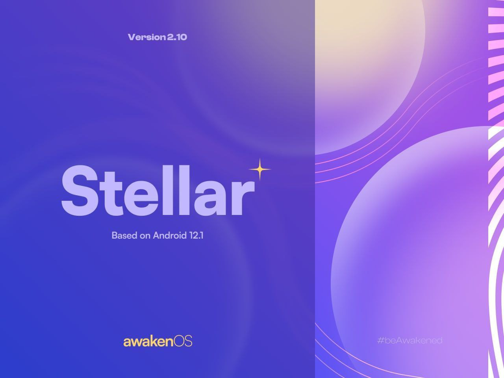Fluid v2.7 - UNOFFICIAL | Android 12.1
By @Gartencoy
⬇️ Download: Here
🗓 Build Date: 15.09.2022
🆑 Changelog: Source
📝 Notes:
• Only for Realme UI 2.0 Vendor!!!
• Gapps Included
• If any bug faced send logs else it wont be considered as bug
🐞 Bugs:
• Hotspot
• Screen recorder
• Volte
👤 Credits:
• Anoos and sarthak for trees
• Don-eun for kernel
AwakenOS v2.10 Stellar
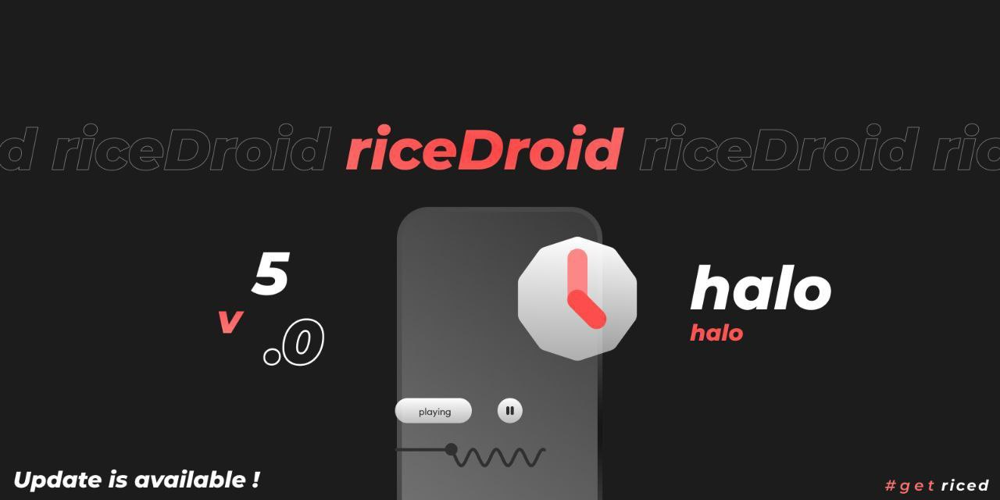AwakenOS v2.10 Stellar - UNOFFICIAL | Android 12.1
By @Gartencoy
⬇️ Download: Here
🗓 Build Date: 28.08.2022
🆑 Changelog: Source
📝 Notes:
• Only for Realme UI 2.0 Vendor!!!
• Gapps Included
• Flash Addon Gapps For Vannila Edition
• If you has install the previous version. Please clean flash this rom
• If any bug faced send logs else it wont be considered as bug
🐞 Bugs:
• Hotspot
• Screen recorder
• Volte
👤 Credits:
• Anoos and sarthak for trees
• Don-eun for kernel
CipherOS 3.8 Nova
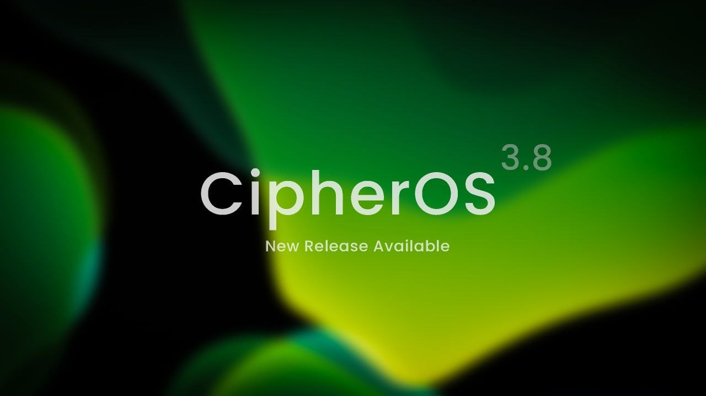CipherOS 3.8 Nova - UNOFFICIAL | Android 12.1
By @Gartencoy
⬇️ Download: Here
🗓 Build Date: 03.09.2022
🆑 Changelog: Source
📝 Notes:
• Only for Realme UI 2.0 Vendor!!!
• Gapps Included
• If any bug faced send logs else it wont be considered as bug
🐞 Bugs:
• Hotspot
• Screen recorder
• Volte
👤 Credits:
• Anoos and sarthak for trees
• Don-eun for kernel
DotOS v6.0
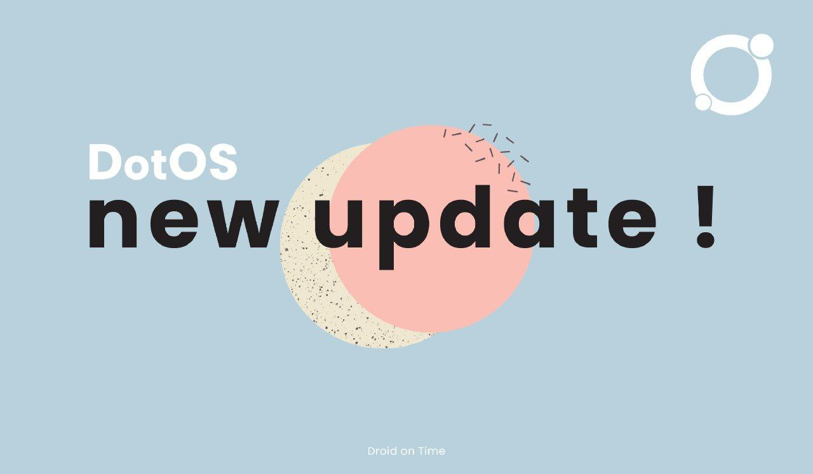DotOS v6.0 - UNOFFICIAL | Android 12.1
By @Gartencoy
⬇️ Download: Here
🗓 Build Date: 11.09.2022
🆑 Changelog: Source
📝 Notes:
• Only for Realme UI 2.0 Vendor!!!
• If any bug faced send logs else it wont be considered as bug
🐞 Bugs:
• Hotspot
• Screen recorder
• Volte
👤 Credits:
• Anoos and sarthak for trees
• Don-eun for kernel
EvolutionX v6.7
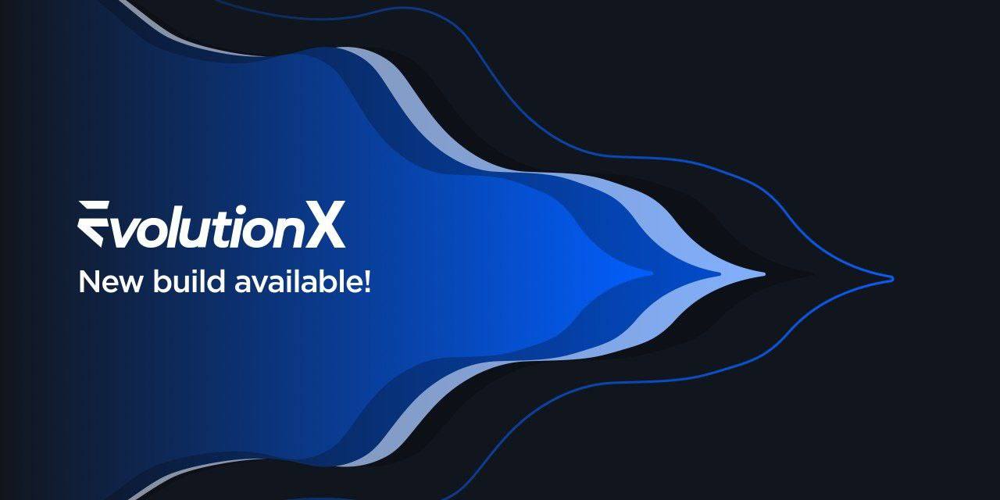EvolutionX v6.7 - UNOFFICIAL | Android 12.1
By @Gartencoy
⬇️ Download: Here
🗓 Build Date: 21.09.2022
🆑 Changelog: Source
📝 Notes:
• Only for Realme UI 2.0 Vendor!!!
• Gapps Included
• If any bug faced send logs else it wont be considered as bug
🐞 Bugs:
• Hotspot
• Screen recorder
• Volte
👤 Credits:
• Anoos and sarthak for trees
• Don-eun for kernel
Fluid v2.7
Fluid v2.7 - UNOFFICIAL | Android 12.1
By @Gartencoy
⬇️ Download: Here
🗓 Build Date: 15.09.2022
🆑 Changelog: Source
📝 Notes:
• Only for Realme UI 2.0 Vendor!!!
• Gapps Included
• This Rom Not Included With Launcher. Flash Launcher Addon At Custom Recovery!
• If any bug faced send logs else it wont be considered as bug
🐞 Bugs:
• Hotspot
• Screen recorder
• Volte
👤 Credits:
• Anoos and sarthak for trees
• Don-eun for kernel
PixelExtended 4.9
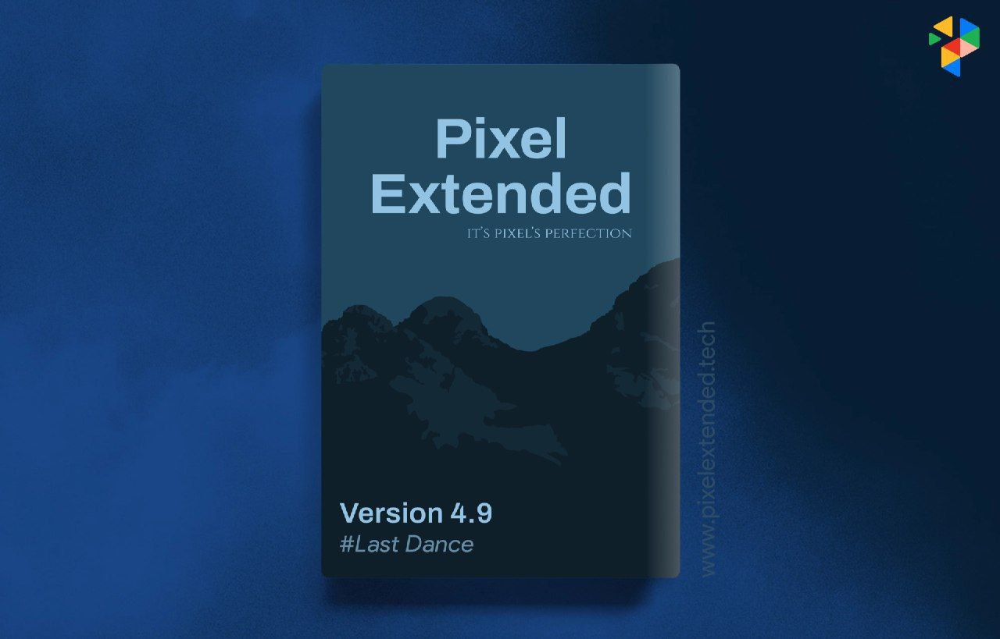PixelExtended 4.9 - UNOFFICIAL | Android 12.1
By @Gartencoy
⬇️ Download: Here
🗓 Build Date: 30.09.2022
🆑 Changelog: Source
📝 Notes:
• Only for Realme UI 2.0 Vendor!!!
• Gapps Included
• If any bug faced send logs else it wont be considered as bug
🐞 Bugs:
• Hotspot
• Screen recorder
• Volte
👤 Credits:
• Anoos and sarthak for trees
• Don-eun for kernel
LineageOS v19.1
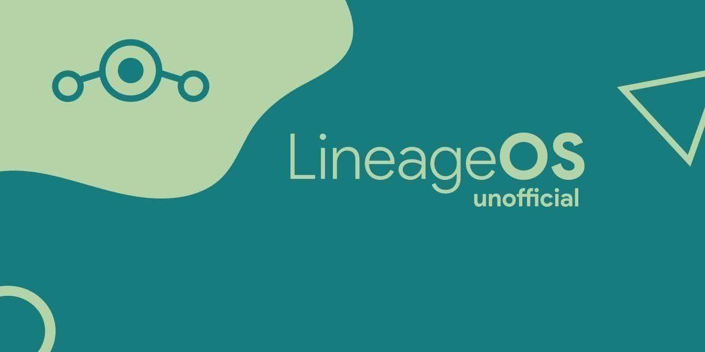LineageOS 19.1 - UNOFFICIAL | Android 12.1
By @Gartencoy
⬇️ Download: Here
🗓 Build Date: 26.11.2022
🆑 Changelog: Source
📝 Notes:
• Only for Realme UI 2.0 Vendor!!!
• Gapps not Included
• This Rom Not Included With Launcher. Flash Launcher Addon At Custom Recovery!
• If any bug faced send logs else it wont be considered as bug
🐞 Bugs:
• Hotspot
• Screen recorder
• Volte
👤 Credits:
• Anoos and sarthak for trees
• Don-eun for kernel
crDroidAndroid v8.11
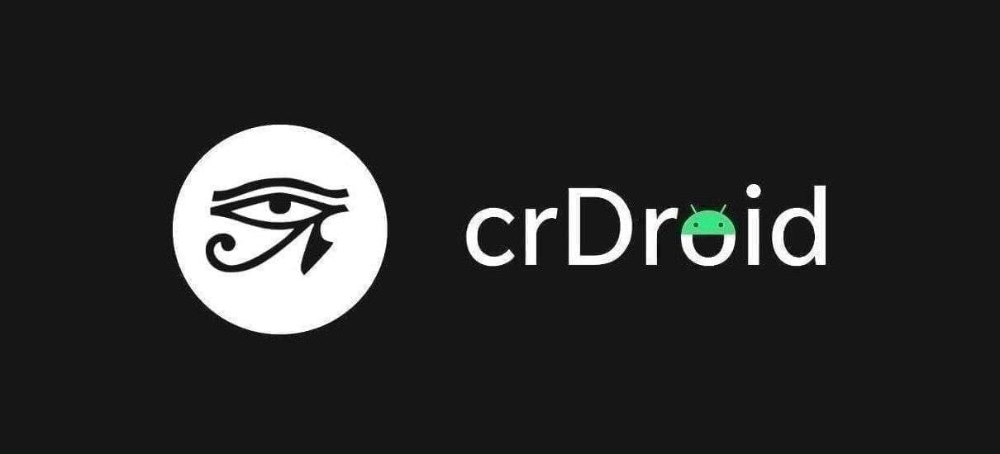crDroidAndroid v8.11 - UNOFFICIAL | Android 12.1
By @Gartencoy
⬇️ Download: Here
🗓 Build Date: 11.12.2022
🆑 Changelog: -
📝 Notes:
• Only for Realme UI 2.0 Vendor!!!
• Gapps and Keyboard not included
• Dont install Nikgapps to this rom
• If any bug faced send logs else it wont be considered as bug
🐞 Bugs:
• Hotspot
• Screen recorder
• Volte
👤 Credits:
• Anoos and sarthak for trees
• Don-eun for kernel
Bootleggers v6.8 ALPHA
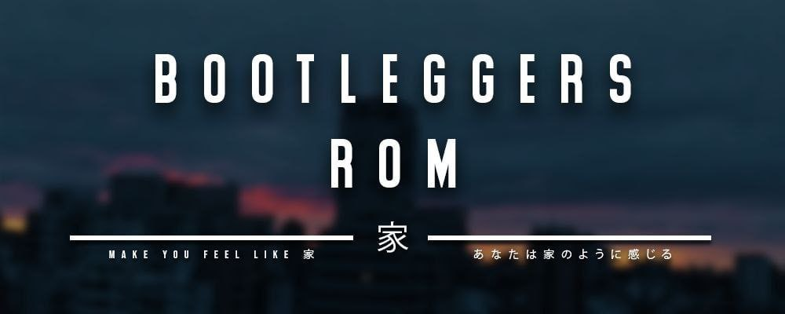Bootleggers v6.8 ALPHA - UNOFFICIAL | Android 12.1
By @Gartencoy
⬇️ Download: Here
🗓 Build Date: 06.12.2022
🆑 Changelog:-
📝 Notes:
• Only for Realme UI 2.0 Vendor!!!
• Gapps and Keyboard not included
• Dont install Nikgapps to this rom
• If any bug faced send logs else it wont be considered as bug
🐞 Bugs:
• Keyboard
• Hotspot
• Screen recorder
• Volte
👤 Credits:
• Anoos and sarthak for trees
• Don-eun for kernel
tequilaOS 12.1
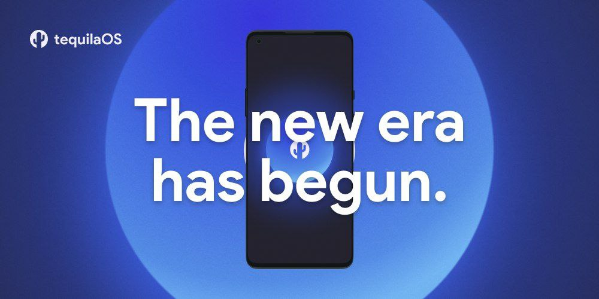tequilaOS 12.1 - UNOFFICIAL | Android 12.1
By @Gartencoy
⬇️ Download: Here
🗓 Build Date: 06.12.2022
🆑 Changelog: Source
📝 Notes:
• Only for Realme UI 2.0 Vendor!!!
• Gapps Included
• If any bug faced send logs else it wont be considered as bug
🐞 Bugs:
• Hotspot
• Screen recorder
• Volte
👤 Credits:
• Anoos and sarthak for trees
• Don-eun for kernel
FLASHTOOL
v1 v2ROOT
Cara root:
• Unlock bootloader
• Disable VBMETA
• Pasang custom recovery
• Download patched-boot (sesuai versi)
• Reboot ke recovery
• Pilih install, pilih file boot_root.img, centang boot, install.
UBL
Tutorial UBL Realme narzo 30a:
Harus menggunakan pc
Download dulu bahannya
•app in-depth test
•Driver
•Adb and fastboot
Buka aplikasinya, lalu tekan start applying. Tunggu 5-10 menit, lalu tekan start the in depth test.
Jika dirasa terlalu lama, tekan back, lalu tekan lagi tulisan hijau di pojok kanan atas, lalu start the in depth test.
Saat di fastboot, anda hanya perlu mengetikkan "fastboot flashing unlock" (tanpa tanda petik) pada cmd adb and fastboot.
Selamat! Jika sudah menemukan tulisan unlocked dibawah, ponsel anda berarti sudah ter unlock bootloader.
DISABLE VBMETA
Ketik command di fastboot:
fastboot --disable-verity --disable-verification flash vbmeta vbmeta.img
PASANG COSTUM RECOVERY
PASANG CUSTOM RECOVERY WAJIB DISABLE VBMETA
Cara memasang custom recovery:
1. Boot ke bootloader / fastboot mode (oppo verify screen)
2. Buka adb/fastboot di pc
3. ketik fastboot --disable-verity --disable-verification flash vbmeta vbmeta.img
4. fastboot flash recovery recovery.img
5. fastboot reboot recovery
ROOT AOSP
➊ Ekstrak boot.img dari cusrom.zip
➋ Instal Magisk apk.
➌ Di dalam Magisk Manager pilih:
• Magisk → Instal,
• Pilih dan patch file,
• Pilih boot.img yang diekstrak dari cusrom.zip,
• Output magisk yang di-patch akan muncul di dalam folder "Download/". ex: magisk_patchedxxx.img.
➍ Flash magisk patched.img sebagai "boot" (centang boot) di custom recovery.
Cara memasang custom recovery:
1. Boot ke bootloader / fastboot mode (oppo verify screen)
2. Buka adb/fastboot di pc
3. ketik fastboot --disable-verity --disable-verification flash vbmeta vbmeta.img
4. fastboot flash recovery recovery.img
5. fastboot reboot recovery
UNROOT
Cara unroot:
1. Siapkan file boot.img bawaan (sesuai ROM)
2. Flash
- via fastboot (fastboot flash boot boot.img)
- via recovery (centang boot)
AOSP KE RUI
Bahan Yang Diperlukan:
SD Card External
Stock ROM realme UI
Stock Recovery realme UI
Tutorial:
1. Download realme UI (taruh di SD Card External)
2. Install Stock Recovery via Custom Recovery (PBRP/TWRP/dll) / via Fastboot / app flashify, dll
3. Reboot ke Recovery (posisi sudah Stock Recovery)
4. Pilih English → pilih Install Update → pilih Install From Storage → pilih From SD Card
5. Install realme_UI.ozip (ex: RMX3171_11_OTA_0150_all_pcjwhBL3XWmy.ozip)
6. Setelah install selesai, akan mucul popup PILIH OK, lalu pilih menu 'Wipe Data' kemudian pilih 'Format Data' dan otomatis reboot.
Tutorial ini tidak bisa digunakan untuk Downgrade, bisa untuk versi yang sama sebelum ke CusROM atau bisa Upgrade (Contoh: a19 ke a15 akan gagal/error. a19 ke a19 bisa. a13 ke 19 bisa (upgrade*))
Penjelasan Tutorial No. 2
(via Fastboot → fastboot flash recovery namafilerecovery.img)
(Via Custom Recovery → Install → pilih StockRecovery.img → centang recovery
OSTATE
Menghilangkan Peringatan Orange State saat boot.
Flash di Custom Recovery
ZIP
MAGISK
DEBLOAT
UNINSTALL CMD
pm uninstall -k --user 0 [type package name]
REINSTALL CMD
cmd package install-existing [type package name]
DISABLE CMD
pm disable-user --user 0 [type package name]
ENABLE CMD
pm enable [type package name]
System Apps - Package Name
DEBLOAT 2
Tutorial Debloat ColorOS 6 & RealmeUI
- Pastikan device kamu sudah rooted
- Download modul debloat & busybox disini
- Download terminal app di playstore
- Flash kedua file tersebut di magisk dan reboot
- Buka aplikasi terminal
- Ketik su dan beri izin root
- Ketik debloat lalu pilih aplikasi yang ingin dihapus
UNBRICK
Tutorial dan langkah-langkah untuk melakukan unbrick
PERSYARATAN :
| Komputer/Laptop
| Piton
| Alat Bypass + SP Flashtool
| Sopir Google USB
| Ekstrak Realme UI OFP
Prosedur : - Dengan Fastboot (Untuk Downgrade Atau Unbrick Dengan Akses Fastboot/Unlocked Bootloader)
1) Instal Driver Google USB
2) Reboot ke Bootloader/Fastboot
3) Kerugian Kabel Usb Anda
4) Terapkan Driver USB ke perangkat Anda di pengelola perangkat. *Lakukan ini jika perangkat Anda tidak terdeteksi/tidak diterapkan dengan driver.
5) Buka Folder Firmware
6) Jalankan windows_flash_use_fastboot.bat * Jika Anda menggunakan mac/linux, jalankan file skrip lain.
7) Prosedur konfirmasi flash dengan "Y"
8) Tunggu Proses Flashing.
9) Proses Flashing Anda Selesai jika ponsel Anda telah reboot.
10) Nikmati.
- Dengan SP FlashTool (Untuk Downgrade Atau Unbrick)
1) Jalankan Penginstal Python
Anda perlu melakukan seperti menangkap layar (Centang tambahkan python ke jalur)
2) Instal MTK Driver
Buka folder Driver dan klik kanan pada file cdc-acm.inf, lalu klik Install
3) Instal libusb dan Luncurkan alat bypass bernama mtk_bypass_rev4.exe (matikan perlindungan waktu nyata jika terdeteksi sebagai Virus).
4) Matikan perangkat Anda // Jika rusak (atau saat bootloop), lanjutkan ke langkah berikutnya.
5) Tekan Tombol Bypass di alat
Tahan kedua tombol volume menyambungkan perangkat Anda ke PC dengan kabel USB. (Jika bricked atau bootloop Pegang semua 3 tombol bersamaan hingga 10 detik + hingga bypass selesai).
6) Anda dapat melepaskan tombol volume sekarang.
7) Now open spflashtool folder and run FlashTool.exe
8) Select Download Agent file from "VerifiedBootFix" folder. "Bypass Tools Pack\VerifiedBootFix\DA_6765_6785_6768_6873_6885_6853.bin"
9) Select scatter file from Firmware Folder "RMX3171 OFP RUI *\ofp\MT6768_Android_scatter.txt"
10) Pastikan mode flash adalah mode "unduh saja".
11) Tekan Tombol Unduh Hijau.
12) Setelah flashing "tanda centang hijau" akan muncul.
Flashing Done ✅
13) Cabut kabel USB. Tunggu 10 detik dan tahan tombol daya.
14) Selesai.
PACTH BOOT TUTORIAL
1. Unduh apk magisk dari sini dan instal
2. Buka folder zip rom Anda menggunakan pengelola file yang layak dan ekstrak boot.img seperti ini
3. Buka magisk apk dan lakukan langkah-langkah yang diberikan pada gambar di atas dan tambal boot.img yang telah diekstraksi
4. Setelah menambal, Magisk yang ditambal img disimpan di folder Unduh.
5. Buka pemulihan dan pilih gambar yang ditambal itu, lalu pilih opsi "boot" lalu flash dan reboot ke sistem. Atau Anda dapat mem-flash-nya di fastboot dengan perintah "fastboot flash boot bootname.img
6. Jangan lupa untuk menonaktifkan vbmeta jika Anda berada di RUI atau MIUI
Perangkat Anda akan di-root sekarang.
*Catatan untuk orang bodoh: Gunakan img yang ditambal hanya jika Anda menggunakan rom tersebut. Buat img baru setelah pindah ke rom lain.
PULL IMG
PULL STOCKBOOT & RECOVERY
No Root method(via cmd)
Boot to recovery
- adb kill-server
- adb root
- adb pull dev/block/by-name/boot
- adb pull dev/block/by-name/recovery
- adb pull dev/block/by-name/vbmeta
Root method(via termux) :
- Download termux
- su
- dd if=/dev/block/by-name/boot of=/storage/emulated/0/boot.img
- dd if=/dev/block/by-name/recovery of=/storage/emulated/0/recovery.img
- dd if=/dev/block/by-name/vbmeta of=/storage/emulated/0/vbmeta.img
DOWNGRADE
Tutorial dan langkah-langkah untuk melakukan downgrade!
(Jika ingin mendowngrade hp anda tanpa unlock bootloader, tekan saja pada tombol "File rollback")
Untuk mendowngrade dengan file rollback, anda cukup pergi ke mode recovery, pilih install update from (internal/sdcard, tergantung tempat anda menyimpan file nya), klik file itu, dan tekan yes.
Downgrade rUI tanpa SP Flash Tool
Poses ini akan menghapus semua data di internal, lakukan backup sebelum memulai
> Lakukan Reset Pabrik Penuh (factory reset) dari pengaturan Telepon sebelum melanjutkan.
> Gandakan file ozip (copy paste).
> Ekstrak ozip dan salin file biner "update-binary" dari ozip yang diekstrak.
Lokasi filenya:
META-INF/com/google/android/update-binary
> Sekarang salin update-binary yang telah diekstrak dan file ozip ke penyimpanan internal.
> Sekarang sambungkan ke PC, aktifkan USB debugging dan atur adb dan jalankan perintah di bawah ini:
adb reboot recovery
(Tunggu sampai hp masuk ke recovery mode)
adb kill-server
adb root
(Tunggu beberapa detik, abaikan kesalahan Timeout)
adb shell
cp /data/media/0/update-binary /sbin/
chmod 755 /sbin/update-binary
/sbin/update-binary 3 1 /data/media/0/namafileozip
TIPS: setelah mengetik sampai /data/media/0/ ketik RMX lalu tekan tab dan itu akan otomatis melengkapi nama file ozip :)
Sekarang tunggu saja sampai instalasi selesai.
Hasil akhir seharusnya: ui_print script succeeded.
> Setelah instalasi selesai jalankan perintah "exit" untuk keluar dari adb shell.
> Kemudian masuk ke opsi Wipe Data di recovery mode, lakukan Format Data, telepon akan reboot otomatis setelah ini.
(Catatan: Ini akan berfungsi untuk menurunkan versi antara versi RUI1, seperti B61 ke B55, cukup gunakan file update-binary dari ozip yang akan Anda flash)
FILE ROLLBACK
EASY SWITCH
Firmware + Vendor untuk Realme Narzo 30A Untuk Peralihan Mudah Antar Versi RUI
T. Apa fungsinya?
A. Zip ini dapat membantu Anda meningkatkan dari RUI 1 ke RUI 2 atau sebaliknya lebih cepat dan juga menghemat data Anda sekitar 90%.
T. Bagaimana cara menggunakannya
A. Flash zip via custom recovery > Wipe Cache > Reboot to recovery > Format Data > Flash ROM, gapps dll. Selamat menikmati
Juga, PBRP dari masing-masing versi RUI disertakan, secara otomatis akan menggantikan pemulihan sebelumnya.
Catatan:
• Jangan reboot ke sistem sebelum mem-flash rom apa pun. Tidak ada sistem. Siapkan ROM, gapps, dan magisk Anda.
• Cara ini tidak bisa digunakan untuk kembali ke stock rom. Gunakan ozip atau SP Flash Tool sebagai gantinya.
RUI 1
RUI 2
EASY GSI
Install GSI di realme narzo 30A :
Bahan :
1. Perut yg kenyang
2. Pikiran yg tenang
3. ADB Fastboot Terbaru (bisa cek di sini)
4. Driver realme narzo 30A
5. GSI Image (bisa cek di sini untuk beberapa contohnya) (pastikan download yg A/B jangan A only)
6. vbmeta, boot.img ori (disesuaikan boot-nya dengan firmware A13 atau A15)
6. realme narzo 30A yg sudah UBL
Siap eksekusi? Oke lanjut ke caranya :
1. Pastikan driver telah terinstall dan ADB Fastboot sudah berfungsi dengan benar
2. Pastikan img GSI, vbmeta, dan boot ada di folder ADB Fastboot
2. Ketika narzo 30A ada di system, tancapkan ke komputer (bisa PC bisa laptop) dan ketikkan :
adb reboot fastboot
Nantinya narzo 30A akan reboot ke recovery, biarkan aja, karena itu sebenarnya masuk ke mode fastboot
3. Flash GSI dengan cara :
fastboot flash system
namagsiygkalianinginflash.img
4. Kemudian flash vbmeta dan boot ori dengan cara :
fastboot flash vbmeta vbmeta.img
fastboot flash boot boot.img
5. Reboot ke bootloader dengan cara :
fastboot reboot bootloader
6. Wipe data dengan cara :
fastboot -w
7. Reboot dengan cara :
fastboot reboot
Changelog
- Initial release based on android-12.1.0_r11 - july security patch
- Inbuilt gapps
- OTA support
- Some new QS tiles (QR code scanner, caffeine, heads up, audio mode and more)
- ADB Root
- Pixel monet customizer
- WiFi and Bluetooth timeout
- Face unlock
- Toggle data disabled icon
- Toggle between 4G/LTE labels
- 3 finger swipe to screenshot
- Themed icons
- Toggle to show apps labels on desktop and in drawer
- Google Feed
UNDUH
UNDUH
Source & Credits
Images:
- Unsplash - https://unsplash.com/
Fonts:
- Icons Font Face - https://fontawesome.com/
Scripts:
- jQuery - http://www.jquery.com/
- Bootstrap 4 - http://getbootstrap.com/
- Highlight Js - https://highlightjs.org/
- jQuery easing - http://gsgd.co.uk/sandbox/jquery/easing/
- Magnific Popup - http://dimsemenov.com/plugins/magnific-popup/
Support
If this documentation doesn't answer your questions, So, Please send us Email via Item Support Page
We are located in GMT +5:30 time zone and we answer all questions within 12-24 hours in weekdays. In some rare cases the waiting time can be to 48 hours. (except holiday seasons which might take longer).
Don’t forget to Rate this template
Go to your Themeforest Profile > Downloads Tab > & then You can Rate & Review for our template.
Thank You.
More Templates
Checkout Our Below Premium Templates


Changelog
See what's new added, changed, fixed, improved or updated in the latest versions.
For Future Updates Follow Us @themeforest / @twitter / @twitter / @twitter / @Dribbble
Version 1.1 (12 Oct, 2020)
- Added Your information here for added new feature
- Fixed Some minor bugs for browser compatibility
- Fixed Some minor bugs for responsive
- Updated FontAwesome to Latest Version
- Updated Bootstrap to Latest Version
- Updated Improvements in CSS and JS
Version 1.0 (8 April, 2020)
Initial Release